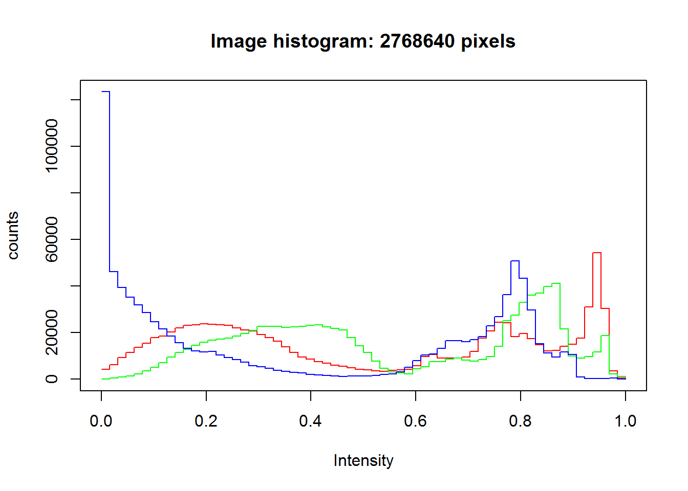
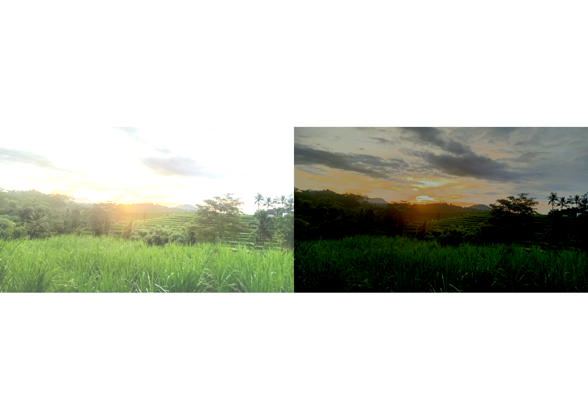
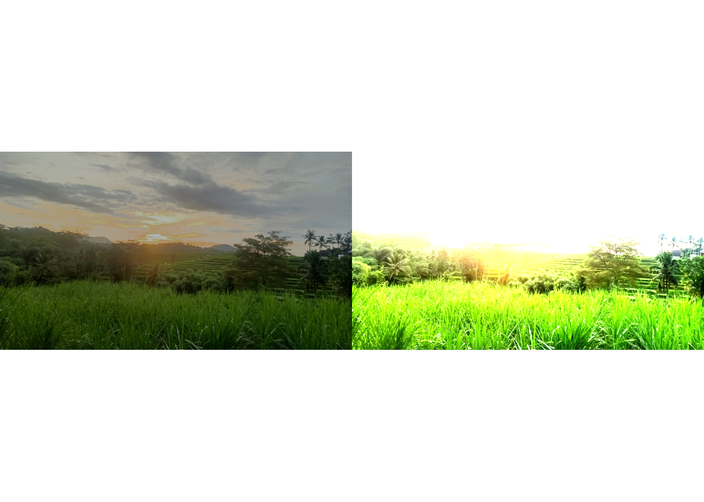
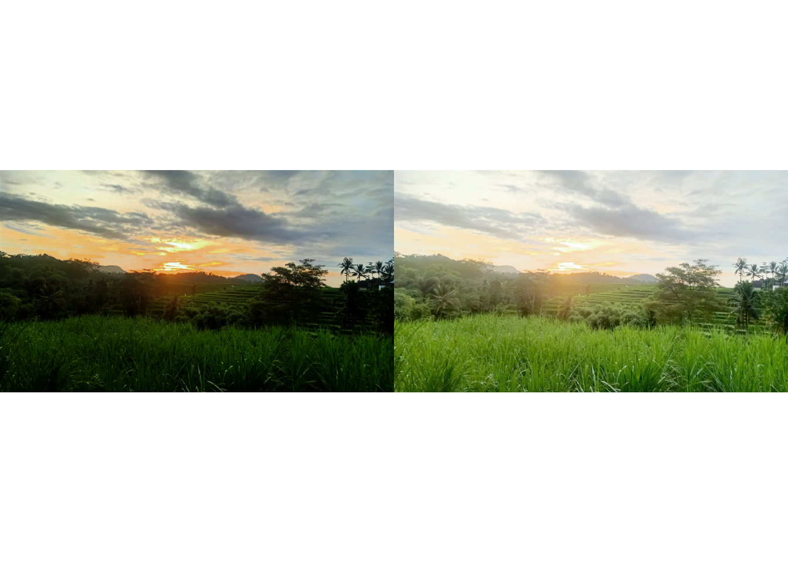
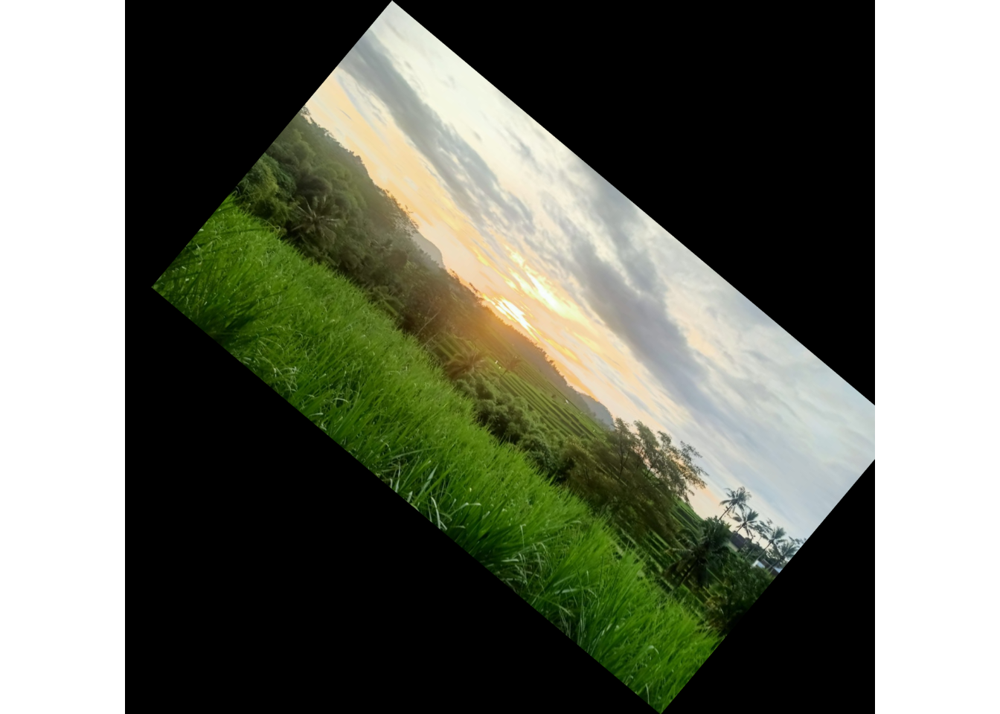
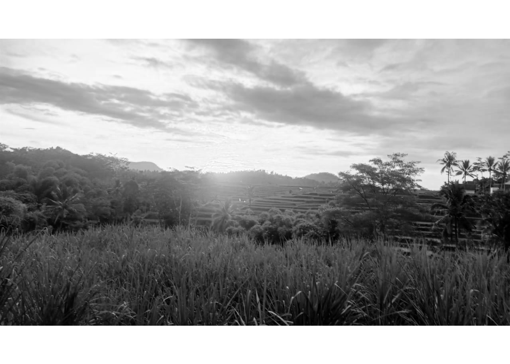
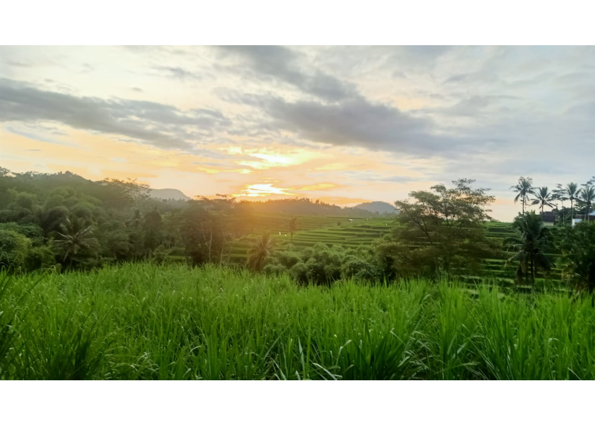
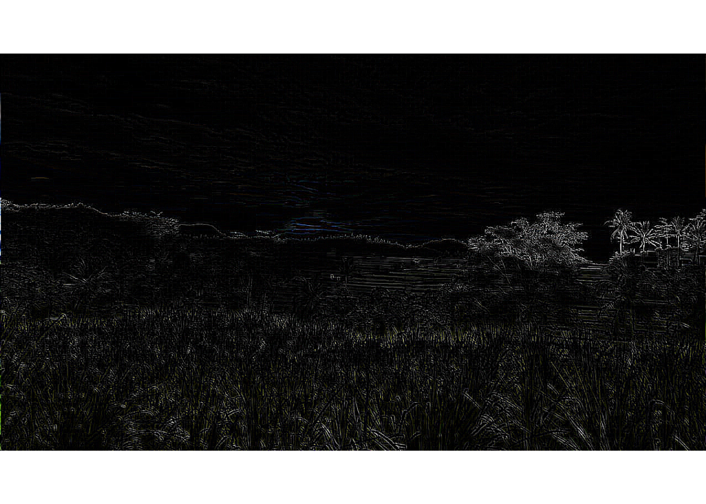

Program Analisis Gambar
Kartika Wulandari/Teknik Informatika/UIN Maulana Malik Ibrahim/Dosen Pembimbing = Prof.Dr.Suhartono,M.kom
20 Maret 2021
- Instalasi Package
Langkah pertama untuk menginstall package EBImage, yaitu dengan menggunakan source code dibawah ini
if (!requireNamespace("BiocManager", quietly = TRUE))
install.packages("BiocManager")
BiocManager::install("EBImage")## Bioconductor version 3.12 (BiocManager 1.30.10), R 4.0.3 (2020-10-10)## Installing package(s) 'EBImage'## package 'EBImage' successfully unpacked and MD5 sums checked
##
## The downloaded binary packages are in
## C:\Users\User\AppData\Local\Temp\RtmpgBjmHi\downloaded_packages## Old packages: 'Matrix', 'RCurl', 'survival'- Import / Read image
Untuk membaca gambar dapat menggunakan perintah readImage() serta memasukkan lokasi dan nama gambar. Perintah tersebut telah ada pada package EBImage. Kemudian untuk menampilkan image menggunakan perintah display(namagambar).
library(EBImage)
Image <- readImage('view.jpg')
display(Image)
print(Image)## Image
## colorMode : Color
## storage.mode : double
## dim : 1280 721 3
## frames.total : 3
## frames.render: 1
##
## imageData(object)[1:5,1:6,1]
## [,1] [,2] [,3] [,4] [,5] [,6]
## [1,] 0.8274510 0.8274510 0.8274510 0.8274510 0.8235294 0.8235294
## [2,] 0.8274510 0.8274510 0.8274510 0.8235294 0.8235294 0.8196078
## [3,] 0.8274510 0.8235294 0.8235294 0.8235294 0.8196078 0.8196078
## [4,] 0.8235294 0.8235294 0.8235294 0.8235294 0.8196078 0.8196078
## [5,] 0.8274510 0.8274510 0.8235294 0.8235294 0.8235294 0.8196078- Menampilkan Histogram gambar
Pada langkah ini, akan mengetahui histogram dari gambar dengan menambahkan source code dibawah ini
hist(Image)
- Mengatur Tingkat Kecerahan Pada langkah ini, akan dicoba untuk memanipulasi gambar dengan mengunakan tanda + dan - pada kecerahan gambar. Disini saya akan menambahakan dan mengurangi 0.3 pada intensitas gambar Dengan menginputkan sourcecode berikut :
Image1 <- Image + 0.3
Image2 <- Image - 0.3
par(mfrow= c(1,2))
plot(Image1)
plot(Image2)
- Mengatur Kontras Cara mengatur kontras denggan menggunkan perkalian berbeda dengan kecerahan menggunakan - dan +. Untuk gambar pertama dikali dengan 0.7 dan gambar kedua dikali dengan 2.8, dengan menginpitkan source code berikut
Image3 <- Image * 0.7
Image4 <- Image * 2.8
par(mfrow= c(1,2))
plot(Image3)
plot(Image4)
- Koreksi Gamma Koreksi Gamma merupakan nama dari sebuah operasi nonlinier yang digunakan untuk kode dan decode luminance atau tristimulus nilai-nilai dalam video atau sistem gambar, ditentukan oleh power-law expression. Caranya dengan menginputkan sourcecode berikut
Image5 <- Image ^ 2
Image6 <- Image ^ 0.7
par(mfrow=c(1,2))
plot(Image5)
plot(Image6)
- Memotong Gambar Cara memotong atau cropping gambar yaitu dengan memotong array dari pixel gambar, Rentang gambar yang digunakan yaitu 960 x 640, maka memotongnya tidak bisa lebih dari ukuran tersebut. Caranya dengan menginputkan source code dibawah ini :
display(Image[100:500, 50:300,])- Transformasi Spasial Caranya dengan menggunakan rotate, translate flip yang telah disediakan oleh EBImage. Dengan menginputkan sourcecode berikut
Imagetr <- translate(rotate(Image, 40), c(50,0))
display(Imagetr)
- Manajemen Warna Array memiliki 3 sumbu di dimensi, yang merupakan slot untuk tiga saluran, yaitu merah, hijau,dan biru. Menggunakan sourcecode berikut
colorMode(Image) <- Grayscale
display(Image)## Only the first frame of the image stack is displayed.
## To display all frames use 'all = TRUE'.
print(Image)## Image
## colorMode : Grayscale
## storage.mode : double
## dim : 1280 721 3
## frames.total : 3
## frames.render: 3
##
## imageData(object)[1:5,1:6,1]
## [,1] [,2] [,3] [,4] [,5] [,6]
## [1,] 0.8274510 0.8274510 0.8274510 0.8274510 0.8235294 0.8235294
## [2,] 0.8274510 0.8274510 0.8274510 0.8235294 0.8235294 0.8196078
## [3,] 0.8274510 0.8235294 0.8235294 0.8235294 0.8196078 0.8196078
## [4,] 0.8235294 0.8235294 0.8235294 0.8235294 0.8196078 0.8196078
## [5,] 0.8274510 0.8274510 0.8235294 0.8235294 0.8235294 0.8196078colorMode(Image) <- Color
display(Image)
- Filter Pada langkah ini, kita akan melakukan smoothing dengan menggunakan low-pass filter, dan menggunakan high-pass filter. Selain itu, kita juag akan menyelidiki median filter untuk menghilangkan noise. Dengan menginputkan sourcecode berikut.
a.low-pass filter
fLow <- makeBrush(21, shape= 'disc', step=FALSE)^2
fLow <- fLow/sum(fLow)
Image.fLow <- filter2(Image, fLow)
display(Image.fLow)- high-pass filter
fHigh <- matrix(1, nc = 3, nr = 3)
fHigh[2, 2] <- -8
Image.fHigh <- filter2(Image, fHigh)
display(Image.fHigh)
- Menghilangkan noise menggunakan medianFilter
Image <- readImage("view.jpg")
medFltr <- medianFilter(Image, 1.1)
display(medFltr)Daftar Pustaka :
https://thinkstudioo.blogspot.com/2018/03/analisis-image-menggunakan-ebimage-di-r.html
https://thinkstudioo.blogspot.com/2018/03/analisis-image-menggunakan-ebimage-di-r_6.html